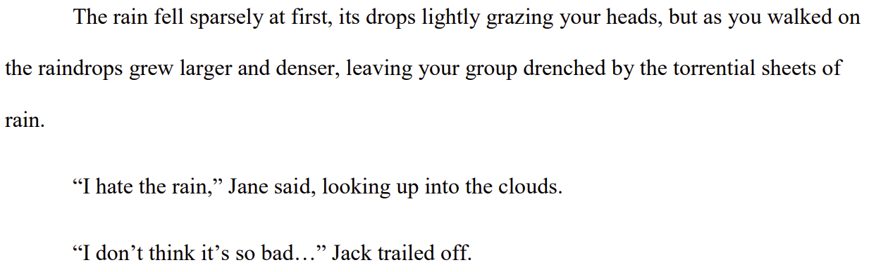
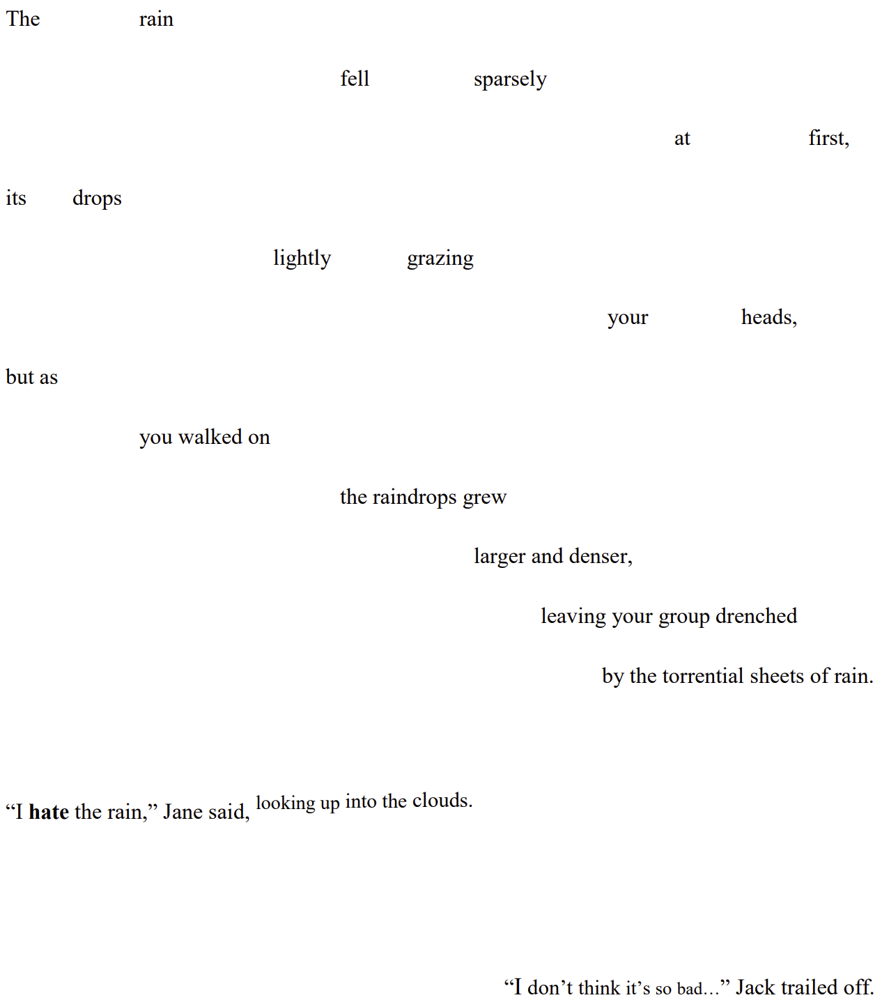

I recently had the great fortune of contributing to the
VIBES project, which aims to provide personalized assistance to middle school kids (and their adults) to help them grow in emotional maturity and social awareness. Though I worked on many aspects of the project's early stages - including design language, prototype development, and both UX and creative writing - I would like to provide a deep dive into a seemingly innocuous aspect of student-side interaction design I focused on for the VIBES
Minimum
Viable
Product.
Viability, really, was my primary concern in the MVP. I was tasked with developing this in Qualtrics, after all, thus leaving me with a seemingly impossible goal:
How in the world could I engage kids with an online survey?
Indeed, given the focus on emotional development, the project would not be
viable at all if the students taking it were not fully invested in the experience. Though this can partially be remedied through skillful writing as well as research on social and emotional learning, design was a core component. Such a restrictive design challenge as this - engaging students
only through the placement of words on a page - is always something I love to tackle.
To start, I recognized that reading (and by extension, taking a survey) is consciously viewed as requiring
effort by students; especially those who do not enjoy literature on their own. Thus, my goal became to minimize as much as possible the
conscious work that goes into reading, while maximizing the
latent curiosity people experience from novel tasks.
Here is an example before I go any further. Both images below represent the
exact same text: a brief description and some dialogue. The one on the left uses traditional literary standards, whereas the one on the right applies some of the principles I created for this project.


Looking at these samples with but a cursory glance, the
left image appears as writing typically does. It is thus easily dismissed or skimmed over by disinterested students. The
right image, on the other hand, requires a more careful degree of consideration, and is not immediately classified in one's mind as typical prose. It is not to the point of being unreadable, of course, but it encourages
curiosity, and brings out the inherent human need for
pattern recognition. On the left is a pattern kids have seen a million times; one they may have a distaste for. On the right is something new to discover and explore.
I cannot emphasize enough the value of this first impression.
Reminiscing can last a lifetime, but there is only
one opportunity to capture that engagement in the first place.
Next, let us begin actually reading the text. The description of rain going from light to strong is made
physical in the right image: the words themselves becoming denser and swifter just as the raindrops do. Such spacing also serves the dual purpose of controlling the
pace of reading, just as one would rush more in a downpour than a light drizzle.
As for the dialogue, giving each of the two characters a different alignment provides an unspoken indication of their
locations relative to you in the story. It also makes it much easier for readers to understand
who is speaking in longer exchanges. As for the content of the dialogue, using even simple text effects can add a great deal of personality and
presence. Jane's use of bold indicates the emphasis in her words, and the description of her movement physically moves up with her. Meanwhile, having Jack's dialogue become slightly smaller as he goes on provides a physical indicator of him trailing off.
This careful placement and tweaking of simple words on a page comes with the added benefit of providing those who do not learn well from reading or listening to words - so-called
visual or tactile learners - with an additional foothold in the experience, enhancing their understanding of the scenario thanks to greater visual and physical engagement.
Extending all such principles over the entire course of the product thus keeps students engaged: wondering what other novel ideas will be presented to them and making the actual
content of the words that much more likely to have an impact and be
remembered long after the experience has completed.
Now,
what does all this amount to?
-The text provides a
strong first impression by engaging one's curiosity.
-It provides far greater
pacing and physical
presence, making the visual design alone feel
interactive.
-It is more
accessible and effective for those who are
visual or tactile learners.
-It keeps kids'
interest as to what unexpected surprises could come next.
-And there is ultimately a much
greater, lasting impact from the experience.
Inspiration and influences for this and other aspects of my work came from sources in both design and literature. Undoubtedly, Don Norman's work on
emotional design and
levels of processing provided invaluable lenses through which to consider and approach this task. As far as literature goes, stories written in verse such as
Long Way Down by Jason Reynolds, and interactive narratives such as
Kentucky Route Zero by Cardboard Computer provided great examples of how to experiment with literary design and engagement.
Though large-scale testing has yet to begin as of this writing, my work - which includes far more than is detailed here - has been put into practice and I have received excellent feedback on it from the experts in design, software development, and education who have led the VIBES project. Given time, I know its positive impact will be felt by many, thanks to the dedication brought to this challenge.